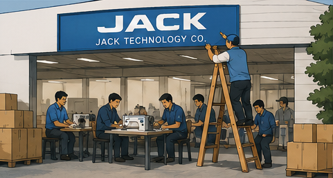
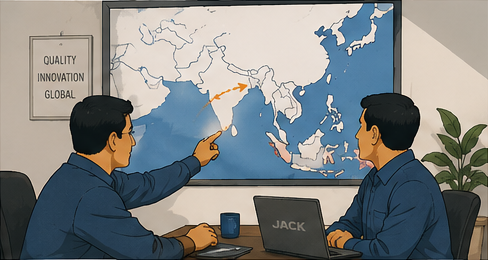
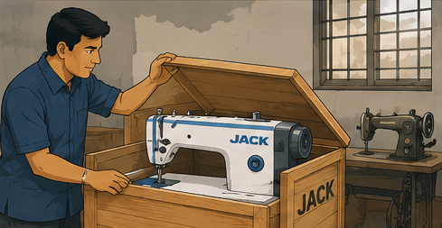
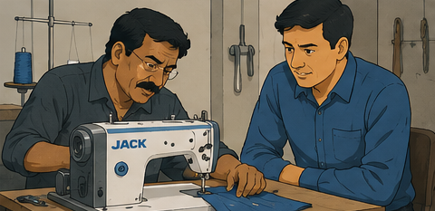
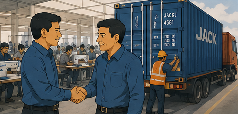
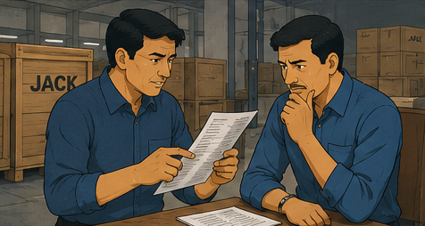
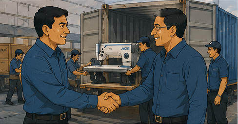
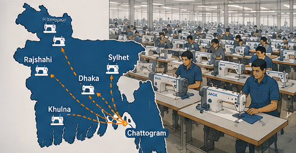

It started
with one machine.
From a small factory in Taizhou to a nationwide network across Bangladesh. Keep scrolling, the story unfolds one chapter at a time.

A factory is born.
Jack Technology Co. opens its doors in Taizhou, a small team building sewing machines by hand, one at a time.

Looking beyond China.
As Jack's machines find their footing at home, the company starts looking for partners abroad to carry them further.

M Fazle Karim buys one machine.
In Bangladesh, M Fazle Karim brings home a single Jack machine of his own, the first quiet step in a much longer story.

Is it worth it?
Before betting on the machine, he brings in a mechanic he trusts to test it properly. The verdict: this is worth building on.

The first order.
A factory in Chittagong places the order: one full container of Jack machines, FM's first real commitment.

Something's wrong.
The container arrives, but the machines inside don't match what was ordered. It's the moment that could have ended it all.

Making it right.
Without hesitation, the entire shipment is replaced, free of charge. Trust rebuilt on the spot, not promised for later.

A reputation takes root.
Word spreads from Chattogram to Dhaka, Sylhet, Rajshahi and Khulna. One honest fix becomes a nationwide name.
Still the same team, still the same promise.
One company, two names
In 2011, as the business expanded nationwide, the company was restructured and renamed Jack Machinery Import & Export. Today the group also operates as Impressive Technology & Service, so either name may appear on an invoice or service paperwork. Both are FM, backed by the same team, warranty and after-sales support.
Trusted across the industry
FM works alongside some of the region's most established names, including Regency, Pacific Jeans, Kenpark, Shangu, Intex Link, Asian Group, Premier and Azim Group, alongside Groz-Beckert as needle partner.
The team behind the machines
FM's culture is built on collaboration and a straightforward commitment: keep every machine on the floor running. That means training technicians properly, stocking the parts factories actually need, and answering the phone when a line goes down.